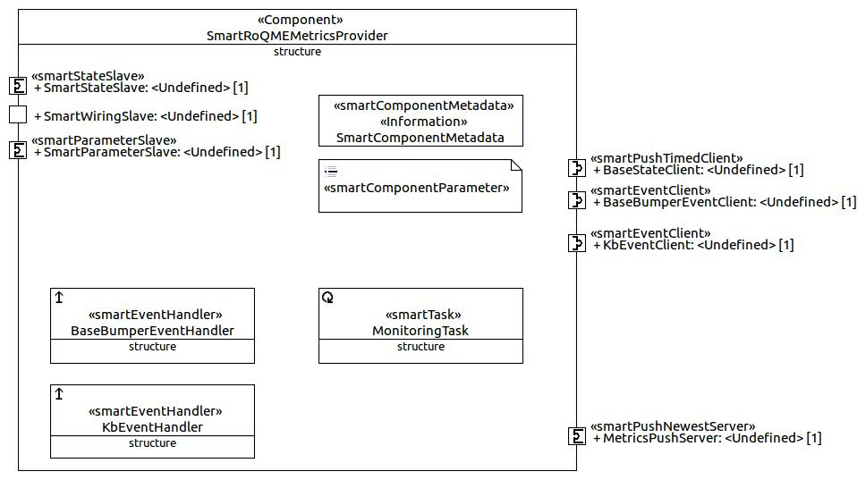

SmartRoQMEMetricsProvider
Description
Class Reference: SmartRoQMEMetricsProvider
| License | ... |
| Hardware Requirements | ... |
| Purpose | ... |
| Library Dependencies | - |
| Version | 1.0.0 |
| sourceforge SVN Repository | SmartRoQMEMetricsProvider |
| Dependencies to Communication Object Repositories | CommBasicObjects
CommRoQMEObjects
|
Services
Required-Ports
-
BaseBumperEventClient
| commPattern | SmartEventClient |
| smartEventHandler | baseBumperEventHandler |
| serverName | SmartRobotinoBaseServer |
| wireable | true |
| serviceName | bumperEventServer |
| eventParameter | CommBumperEventParameter |
| eventResult | CommBumperEventResult |
-
KbEventClient
| commPattern | SmartEventClient |
| smartEventHandler | kbEventHandler |
| serverName | SmartSimpleKB |
| wireable | true |
| serviceName | kbEventServer |
| eventParameter | CommKBEventParam |
| eventResult | CommKBEventResult |
Provided-Ports
-
SmartStateSlave
| commPattern | SmartStateSlave |
-
SmartWiringSlave
| commPattern | SmartWiringSlave |
-
SmartParameterSlave
| commPattern | SmartParameterSlave |
-
MetricsPushServer
| commPattern | SmartPushNewestServer |
| commObject | CommQoSMetrics |
Configuration
InternalParam
-
«InternalParam» Connections
| useBase:Boolean | Default: false |
| useKb:Boolean | Default: false |